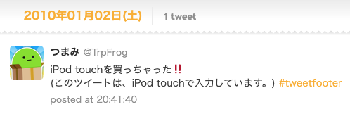
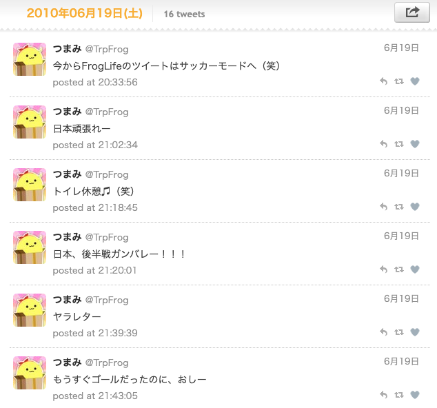
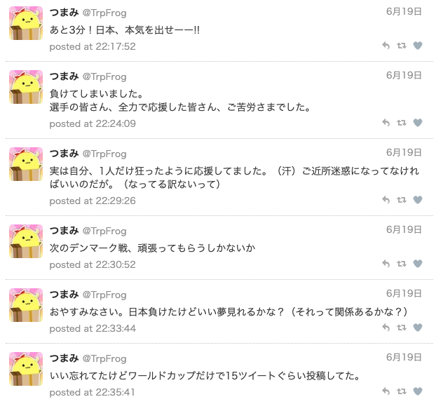
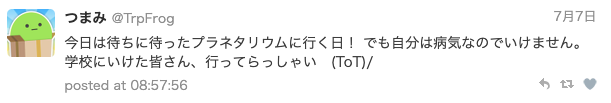
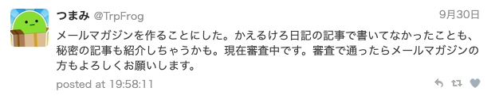
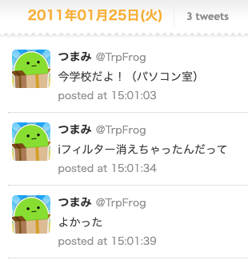
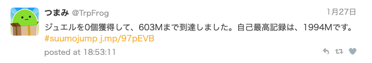
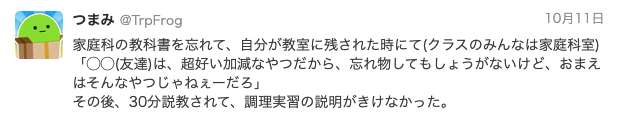

History
生まれる
2000年10月17日
爆誕。
2004年4月
幼稚園入園。 幼稚園は先生に指を踏まれた記憶がある。(根に持ちすぎ)
2007年3月
幼稚園卒園。 この幼稚園たぶん卒園式の練習しかしてない。
小学時代
2007年4月
小学校入学。 小学校では机の揃え方を習いました。
2009年11月25日
Twitter開設。
- クックパッドやってたら謎アイコン(ヒ)見つけたので登録した。
- FF0人で無限にツイートしてた。バカかな？
- 初めてのツイートは「キウイおいしかった！」の説が最有力。
- プライベートモードで学校からもツイートしてた。(たぶんバレてる)
2010年1月2日

iPod touchを買ったときのツイート。これは第三世代。(このWebページはMacBook Proで入力しています。)
2010年6月19日
 
今からFrogLifeのツイートはサッカーモードへ（笑）
ツイッター実況がしたいがために早朝からサッカー中継を見ていたやつ。
別にサッカーに興味があったわけでは無い(カス)。あと当時はIDが違った。
2010年7月7日

校外学習でプラネタリウム行く予定だったけど風邪で休んだらしい。かわいそう。
2010年9月30日

メールマガジンの審査を出した。そういえば審査通ったかどうかもよく覚えてないし、 メールマガジン書いた覚えもないな🤔 結局これどうしたんだっけ......
2011年1月25日

小学校からツイートしている悪ガキを発見しました！！！！！ 🚨🚨🚨🚨🚨🚓🚓🚔🚔🚔👮♂️👮♂️👮♂️👮♂️👮♂️👮♂️
2011年1月27日

あ❗#suumojump❗🌚ダン💥ダン💥ダン💥シャーン🎶スモ🌝スモ🌚スモ🌝スモ🌚スモ🌝スモ🌚ス〜〜〜モ⤴ 🌝スモ🌚スモ🌝スモ🌚スモ🌝スモ🌚スモ🌝ス〜〜〜モ⤵ 🌞
2011年3月-2012年3月
iPhoneのゆるふわ育成ゲームMEGUにハマっていたのか自動ツイートがいくつか残っていた。 そういえばこんなゲームもありましたね......。(めちゃくちゃやっていたのを思い出しながら)
2011年10月11日

理不尽説教セレクション。たぶんこの友人ってのはたぶん根拠ないけどねぎ一世。(名誉毀損)
中学時代
後日更新予定。
高校時代
後日更新予定。
受験期 (高校3年)
後日更新予定。
大学 (イマココ)
後日更新予定。